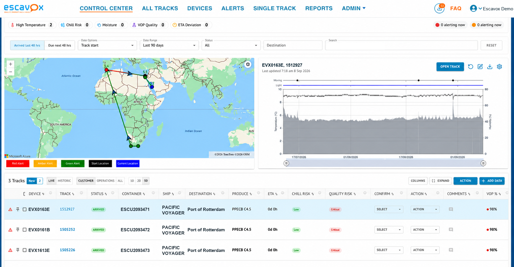

Home / Platform
The platform · MyTracks™Decisions, not dashboards.
MyTracks™ is where Cold Chain Intelligence lives. It ranks shipments by commercial risk, pinpoints where shelf life is lost, and tells you what to do next — before the produce arrives.
Your Control Center.
Every live shipment on one screen — mapped, scored and ranked by commercial risk, with the weak link and shelf-life impact already worked out.

- Ranked by commercial riskWorst-first, so your team works the shipments that actually matter.
- A VOP score per loadOne number for how much shelf life arrives at destination.
- Live map, every modeRoad, air, sea and rail — origin to destination, in one view.
- The weak link, flaggedChill, heat and quality risk pinpointed before the produce lands.
Every view answers a decision.
Not "what does this data show?" — but "what do I do now?" MyTracks™ turns the whole journey into a single, ranked view of where value is at risk, so you act on the shipments that matter.
- See risk, not readingsShipments ranked by commercial risk, worst-first.
- Know the weak linkThe exact leg, facility or hand-off eroding shelf life.
- Act while it countsPrioritise, divert, accept or reject — with confidence.
Analytics that answer, not just display.
Every environmental signal is converted into commercial intelligence you can act on.
Shelf-life prediction
How much life a shipment gained or lost, modelled per commodity.
Risk ranking
Shipments prioritised by commercial risk — worst-first, every day.
Weak-link analysis
The exact leg, facility or hand-off where quality is eroded.
Condensation & moisture risk
Where produce is sweating, drying or at risk of chill injury.
Benchmarking
Compare routes, seasons and suppliers on the metric that matters: quality out.
Shareable intelligence
One independent source of truth every partner in the chain can trust.
From signal to decision.
Zero capex, zero tech, zero buttons to push. We do the set-up for you.
Capture
An always-on device travels with your consignment, listening to its full condition.
Model
Environmental science and physics turn raw signals into shelf-life and risk.
Rank
MyTracks™ surfaces the shipments that need you — ordered by commercial risk.
Act
Prioritise, divert or defend quality — and share the evidence with partners.
Watch a signal become a decision.
A live G6+ shipment, interpreted by MyTracks™ in real time — re-ranked by commercial risk, the weak link identified, shelf-life quantified, an action recommended.
One source of truth, shared.
Individual shipments combine to reveal performance, risk and quality across your whole network — and independent, verifiable intelligence gives every partner one version of the truth to act on.
- No platform feesUnrestricted access to your data and performance metrics.
- Compare across the networkRoutes, partners and regions, season on season.
- Resolve disputes with evidenceAn independent record protects margin and relationships.
The power lies in aggregation — where individual shipments combine to reveal performance, risk and quality outcomes.
Stop reading data. Start making decisions.
See what MyTracks™ reveals about your supply chain — and what it recommends you do next.